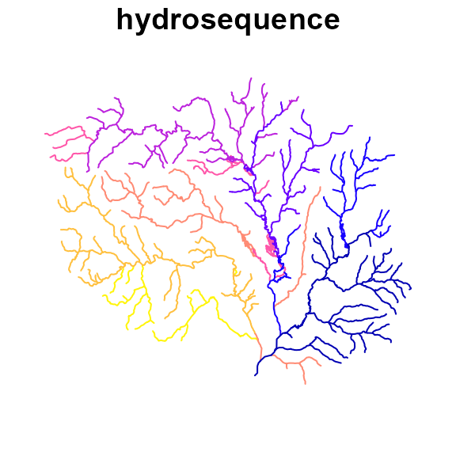

Advanced Network Attributes
dblodgett@usgs.gov
Source:vignettes/advanced_network.Rmd
advanced_network.RmdTerminology
The terms used below are derived from concepts of graph theory, the HY_Features data model, and the NHDPlus data model. Many of the concepts here are also presented in: Mainstems: A logical data model implementing mainstem and drainage basin feature types based on WaterML2 Part 3: HY Features concepts.
Introduction
The NHDPlus data model includes many ‘value added attributes’ (VAA). This vignette discusses a core set of VAA’s that nhdplusTools can create from readily available hydrograhic inputs. The vignette begins with a background needed to understand what these attributes are, and then demonstrates how to create them based on some basic input data. These attributes are documented in the NHDPlus manual, and every effort has been made to faithfully implement their meaning.
While the nhdplusTools package contains other functions to generate network attributes, (e.g. get_pfaf() for Pfafstetter codes and get_streamorder() for stream orders) this vignette focuses on the advanced network VAAs from the NHDPlus data model that revolve around the hydrosequence and levelpath.
Representing Network Topology
A network of flowpaths can be represented as an edge-to-edge (e.g. edge list) or edge-node topology. An edge list only expresses the connectivity between edges (flowpaths in the context of rivers), requiring nodes (confluences in the context of rivers) to be inferred.
As of 2/2022 nhdplusTools works on edge list representations only. The table and simple graphics below depict both an edge-node and edge-to-edge topology.
#> ID toID fromnode tonode
#> 1 3 N1 N3
#> 2 3 N2 N3
#> 3 NA N3 N4
In an edge-node topology, edges are directed to nodes which are then directed to other edges. An edge-to-edge toplogy does not have intervening nodes.
The “toID” of a terminal flowpath can be either NA or, by convention, 0. Using 0 is preferred within nhdplusTools but both are handled in most cases. Further, as long as 0 is not in the set of IDs, there is little practical difference.
In nhdplusTools, edge-to-edge topology is referred to with “comid and tocomid” attributes, or a more general, “ID and toID” depending on the function in question.
Hydrosequence

Smaller ‘hydrosequence’ values are gaurunteed to be downstream of larger values along connected paths.
The NHDPlus data model includes an attribute called hydrosequence that is functionally a topological sort of the flowpath network. It provides an integer identifier guaranteed to decrease in the downstream direction. For flowpaths that are not connected by a single direction navigation (e.g. parallel tributaries) the hydrosequence has no significance. However, when two flowpaths have a direct navigation, the downstream flowpath will always have the smaller hydrosequence. nhdplusTools supports creation of hydrosequence with the get_sorted() function.
It is hard to overstate the importance of hydrosequence as any function that requires understanding upstream-downstream relationships requires a sorted version of the flowpath network. In the NHDPlus data model, a edge-list topology is stored in the form of a hydrosequence and ‘to hydrosequence’ attribute. The equivalent is available in nhdplusTools, but does not use the to hydrosequence convention, preferring the primary identifier (ID or comid) and an accompanying toID/tocomid.
Level Path

Levelpath values are constant along mainstem paths and are derived from the hydrosequence of their outlet flowline.
A level path is derived from “stream level” which assigns an integer value to mainstem rivers from outlet up the network (see NHDPlus documentation for more). Rivers terminating to the ocean are given level 1 and this level extends all the way to the headwaters. Rivers terminating in level 1 rivers are given level 2, and so on.
“Stream leveling”, then, is the process of establishing uniquely identified “level paths” through a stream network. This is accomplished with a set of rules that determine which tributary should be considered dominant at every confluence to establish the “mainstem rivers” for each “drainage basin” in a network. nhdplusTools supports creation of streamlevel with the get_streamlevel() function, and the creation of level path with get_levelpath(). The convention used in NHDPlus is to assign the levelpath as the hydrosequence of the path’s outlet.
See Mainstems: A logical data model implementing mainstem and drainage basin feature types based on WaterML2 Part 3: HY Features concepts for an in depth discussion of these concepts.
Other Derived Network Attributes
A number of additional attributes can be derived once levelpath and hydrosequence are established. These include:
-
terminal path (
terminalpa): the identifier (hydrosequence or primary id) of the terminal flowpath of network. -
up hydrosequence (
uphydroseq): the identifier of the upstream flowpath on the mainstem -
down hydrosequence (
dnhydroseq): the identifier of the downstream flowpath on the mainstem -
up level path (
uplevelpat): the identifier of the next upstream levelpath on the mainstem -
down level path (
dnlevelpat): the identifier of the next downstream levelpath on the mainstem -
path length (
pathlength): The distance to the network outlet downstream along the main path. -
total drainage area (
totdasqkm): Total accumulated area from upstream flowpath’s catchment area. -
arbolate sum (
arbolatsu): The total accumulated length of upstream flowpaths. -
terminal flag (
terminalfl): A simple 0 or 1 indicating whether a flowpath is a terminal path or not.
Required Base Attributes
Creating levelpath and hydrosequence identifiers requires a set of base attributes that include:
fromnode/tonodeorID/toID: from and to nodes can be used to generate an edge to edge flowpath topology. Note that “ID/toID” is “comid/tocomid” in somenhdplusToolsfunctions.length: a length is required for each flowpath in the network to determine a flow distance, and, if using the arbolate sum for stream leveling.area: the local drainage area of each flowpath is useful in many contexts but is primarily used to calculate total drainage area.weight: a weight metric is required for stream leveling to determine the dominant upstream flowpath. In the NHD, the arbolate sum is used however alternative metrics (e.g. total drainage area) can be used instead.nameID: Many times it is preferable to follow a consistently named path (e.g. GNIS) rather a strict physical weight when stream leveling. In these cases anameIDcan be provided.divergence: in order to create a [many:1] upstream to downstream topology, diverted paths must be labeled as such. This attribute, is 0 for normal (already [many:1]) connections, 1 for the main path through a divergence, and 2 for any diverted path.feature type (
ftype): used to determine whether a feature is a stream, a coastal path, or some other type of connected network feature. This is the ‘ftype’ in the NHD data model.
NOTE: The nhdplusTools package does not support creation of all attributes discussed here, however, those that are not directly supported can be created based on basic transformations of attributes that nhdplusTools does support.
A visual introduction to the advanced network attributes
To illustrate the above concepts and attributes, we’ll start with the “New Hope” demo data included in the nhdplusTools package and add a tocomid attribute based on the edge-node topology included in the data.
# Import data
source(system.file("extdata/new_hope_data.R", package = "nhdplusTools"))
# Strip the data back to the required base attributes
fpath <- get_tocomid(
dplyr::select(new_hope_flowline, COMID, FromNode, ToNode, Divergence, FTYPE,
AreaSqKM, LENGTHKM, GNIS_ID)
)
# Print
head(fpath <- select(sf::st_cast(fpath, "LINESTRING"),
-tonode, -fromnode, -divergence, -ftype))
#> Simple feature collection with 6 features and 5 fields
#> Geometry type: LINESTRING
#> Dimension: XY
#> Bounding box: xmin: 1517192 ymin: 1555954 xmax: 1518819 ymax: 1557990
#> CRS: +proj=aea +lat_1=29.5 +lat_2=45.5 +lat_0=23 +lon_0=-96 +x_0=0 +y_0=0 +ellps=GRS80 +towgs84=0,0,0,0,0,0,0 +units=m +no_defs
#> comid tocomid areasqkm lengthkm gnis_id geom
#> 1 8893864 8894334 4.8123 3.245 991288 LINESTRING (1518702 1557298...
#> 2 8894490 8894336 0.0000 0.002 991288 LINESTRING (1517194 1556000...
#> 3 8894494 8894490 0.0090 0.102 991288 LINESTRING (1517288 1556038...
#> 4 8894334 8894492 0.4284 0.073 991288 LINESTRING (1517349 1556090...
#> 5 8894492 8894494 0.0018 0.008 991288 LINESTRING (1517295 1556041...
#> 6 8893850 8893864 0.4059 0.954 991288 LINESTRING (1518668 1557990...Hydrosequence and terminal ID
After removing attributes used to generate the tocomid attribute, we have a comid and tocomid relation representing the connectivity of the network as well as attributes required to generate a sorted network with get_sorted()
head(fpath <- get_sorted(fpath, split = TRUE))
#> Simple feature collection with 6 features and 6 fields
#> Geometry type: LINESTRING
#> Dimension: XY
#> Bounding box: xmin: 1505349 ymin: 1554873 xmax: 1508920 ymax: 1558708
#> CRS: +proj=aea +lat_1=29.5 +lat_2=45.5 +lat_0=23 +lon_0=-96 +x_0=0 +y_0=0 +ellps=GRS80 +towgs84=0,0,0,0,0,0,0 +units=m +no_defs
#> comid tocomid areasqkm lengthkm gnis_id terminalID
#> 1 8898302 8896658 0.1521 0.182 983820 8897784
#> 2 8896658 8896656 1.1871 1.371 983820 8897784
#> 3 8896656 8896624 3.8565 2.638 983820 8897784
#> 4 8896664 8896624 1.3770 1.641 8897784
#> 5 8896624 8896570 1.3392 1.167 983820 8897784
#> 6 8896572 8896570 1.5561 1.767 8897784
#> geom
#> 1 LINESTRING (1505349 1555718...
#> 2 LINESTRING (1505455 1555570...
#> 3 LINESTRING (1506375 1554873...
#> 4 LINESTRING (1507786 1554903...
#> 5 LINESTRING (1508236 1556343...
#> 6 LINESTRING (1508311 1558708...The get_sorted() function sorts the flowpaths such that headwaters come first and the terminal flowpath last. Additionally, it produces a terminalID representing the outlet ID of the network. If multiple terminal networks had been provided, the terminalID would allow us to group the data by complete sub networks (a convenient parallelization scheme).
In contrast to the NHD, where the terminal path is identified by the hydrosequence ID of the outlet flowpath (meaning the outlet of a level path is left to a user to generate), nhdplusTools uses the more stable primary ID for identifying outlets to allow the hydrosequence / topo sort attribute to be generated and discarded as needed.
We can visualize this sorting by assigning a temporary “hydrosequence” value to the sorted network row wise. Here, we assign the first rows in the sorted set to large values and the last rows to small values in line with the hydrosequence order convention in NHDPlus.

Level Path and outlet ID
To generate a levelpath attribute, a “physical” weight is needed to determine the upstream mainstem at divergences. For this example, we’ll follow the NHD convention and calculate the arbolate sum explicitly. The get_levelpaths() function will add arbolate sum internally if no weight is explicitly defined.
# Rename and compute weight
fpath[["arbolatesum"]] <- calculate_arbolate_sum(
dplyr::select(fpath,
ID = comid, toID = tocomid, length = lengthkm))
plot(sf::st_geometry(fpath), lwd = fpath$arbolatesum / 10)A nameID identifier can also be provided to override the physical weight when a “smaller” river has the same name. There is an optional override_factor parameter that signifies if the physical weight is override_factor times (e.g. 5) larger on an unnamed or differently named upstream path, the physical weight will be used in favor of the named ID.
As mentioned above, nhdplusTools favors more general naming of to/from nodes then the NHD, so names are modified accordingly.
# Get levelpaths
lp <- get_levelpaths(
dplyr::select(fpath,
ID = comid, toID = tocomid,
nameID = gnis_id, weight = arbolatesum),
status = FALSE, override_factor = 5)
# Print
head(fpath <- dplyr::left_join(fpath, lp, by = c("comid" = "ID")))
#> Simple feature collection with 6 features and 11 fields
#> Geometry type: LINESTRING
#> Dimension: XY
#> Bounding box: xmin: 1505349 ymin: 1554873 xmax: 1508920 ymax: 1558708
#> CRS: +proj=aea +lat_1=29.5 +lat_2=45.5 +lat_0=23 +lon_0=-96 +x_0=0 +y_0=0 +ellps=GRS80 +towgs84=0,0,0,0,0,0,0 +units=m +no_defs
#> comid tocomid areasqkm lengthkm gnis_id terminalID hydrosequence
#> 1 8898302 8896658 0.1521 0.182 983820 8897784 746
#> 2 8896658 8896656 1.1871 1.371 983820 8897784 745
#> 3 8896656 8896624 3.8565 2.638 983820 8897784 744
#> 4 8896664 8896624 1.3770 1.641 8897784 743
#> 5 8896624 8896570 1.3392 1.167 983820 8897784 742
#> 6 8896572 8896570 1.5561 1.767 8897784 741
#> arbolatesum outletID topo_sort levelpath geom
#> 1 0.182 8894348 746 725 LINESTRING (1505349 1555718...
#> 2 1.553 8894348 745 725 LINESTRING (1505455 1555570...
#> 3 4.191 8894348 744 725 LINESTRING (1506375 1554873...
#> 4 1.641 8896664 743 743 LINESTRING (1507786 1554903...
#> 5 6.999 8894348 742 725 LINESTRING (1508236 1556343...
#> 6 1.767 8896572 741 741 LINESTRING (1508311 1558708...
plot(fpath["topo_sort"], key.pos = NULL, reset = FALSE)
plot(fpath["levelpath"], key.pos = NULL)Note that the get_levelpaths adds an outletID signifying the overall network outlet ID (not topo sort / hydrosequence) by primary identifier.
Finally, let’s visualize these advanced VAAs!
In the below animation, each newly added level path is shown in blue, with the outlet flowpath colored in red. Remembering that get_sorted() sorts flowpaths such that headwaters come first and the terminal flowpaths last we invert the network so that level paths fill in from outlet to head waters. For clarity, only levelpaths with more than 2 flowlines are shown.
# Invert plotting order
fpath <- dplyr::arrange(fpath, topo_sort)
# Level Paths with more then 2 flowpaths
lp <- dplyr::group_by(fpath, levelpath) %>%
dplyr::filter(n() > 2)
# Unique Level Path ID
lp <- unique(lp$levelpath)
# Terminal Flowpath
terminal_fpath <- dplyr::filter(fpath, comid %in% terminalID)
gif_file <- "levelpath.gif"
gifski::save_gif({
for(i in 1:length(lp)) {
lp_plot <- dplyr::filter(fpath, levelpath == lp[i])
outlet_plot <- dplyr::filter(lp_plot, comid %in% outletID)
plot(sf::st_geometry(fpath), lwd = 0.5, col = "grey")
plot(sf::st_geometry(terminal_fpath), lwd = 3, col = "red", add = TRUE)
plot(sf::st_geometry(dplyr::filter(fpath, levelpath %in% lp[1:i])), add = TRUE)
plot(sf::st_geometry(lp_plot), col = "blue", add = TRUE)
plot(sf::st_geometry(outlet_plot), col = "red", lwd = 1.5, add = TRUE)
}
}, gif_file, delay = 0.5)
#> [1] "C:\\Users\\dblodgett\\active_code\\nhdplusTools\\vignettes\\levelpath.gif"
knitr::include_graphics(gif_file)Summary
This entire process of sorting the network and building hydrosequence, levelpath, and derivative variables is wrapped in the add_plus_network_attributes() function to provide performance and simplicity. It supports paralellization and will print status updates in the case when the input network is very large. add_plus_network_attributes() returns NHDPlus attribute names (truncated per shapefile rules as is done in the NHDPlus database).
The terminalpa, levelpathi, dnlevelpat, and dnhydroseq attributes are hydroseq identifiers as is the convention in NHDPlus, not primary identifiers (comids) as is returned from the base functions demonstrated above.
As of 2/2022, this function does not support the up level path (uplevelpat) or up hydrosequence (uphydroseq) noted in “Other Derived Network Attributes”.
head(add_plus_network_attributes(dplyr::select(fpath, comid, tocomid, lengthkm, areasqkm,
nameID = gnis_id), status = TRUE))
#> Simple feature collection with 6 features and 14 fields
#> Geometry type: LINESTRING
#> Dimension: XY
#> Bounding box: xmin: 1514059 ymin: 1551922 xmax: 1518746 ymax: 1554515
#> CRS: +proj=aea +lat_1=29.5 +lat_2=45.5 +lat_0=23 +lon_0=-96 +x_0=0 +y_0=0 +ellps=GRS80 +towgs84=0,0,0,0,0,0,0 +units=m +no_defs
#> comid tocomid lengthkm areasqkm nameID weight terminalpa hydroseq
#> 1 8897784 0 1.394 3.5973 991039 577.376 1 1
#> 2 8894360 8897784 0.045 0.0126 575.982 1 2
#> 3 8894356 8894360 1.073 0.8622 991037 435.152 1 151
#> 4 8894354 8894356 0.507 0.2772 991037 426.711 1 159
#> 5 8894350 8894354 1.463 1.0737 987350 10.910 1 741
#> 6 8893884 8894350 1.793 2.1402 987350 9.447 1 742
#> levelpathi pathlength dnlevelpat dnhydroseq totdasqkm terminalfl
#> 1 1 0.000 0 0 595.3383 1
#> 2 1 1.394 1 1 591.7410 0
#> 3 1 1.439 1 2 437.1840 0
#> 4 1 2.512 1 151 428.0076 0
#> 5 741 3.019 1 159 10.9800 0
#> 6 741 4.482 741 741 9.9063 0
#> geom
#> 1 LINESTRING (1514515 1553152...
#> 2 LINESTRING (1514541 1553188...
#> 3 LINESTRING (1515465 1553664...
#> 4 LINESTRING (1515773 1554056...
#> 5 LINESTRING (1517098 1554192...
#> 6 LINESTRING (1518746 1554515...